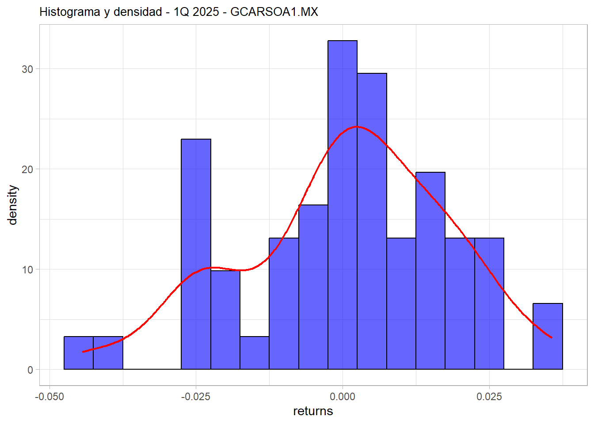

# A tibble: 6 × 3
# Groups: symbol [1]
symbol date returns
<chr> <date> <dbl>
1 GFINBURO.MX 2000-01-03 0
2 GFINBURO.MX 2000-01-04 -0.00517
3 GFINBURO.MX 2000-01-05 -0.00780
4 GFINBURO.MX 2000-01-06 -0.0238
5 GFINBURO.MX 2000-01-07 0.0212
6 GFINBURO.MX 2000-01-10 0.0460 Meixner
Justificación
Grupo Carso y Grupo Financiero Inbursa son dos entidades emblemáticas del empresariado mexicano. Grupo Carso se consolidó como un conglomerado industrial y comercial diversificado, mientras que Grupo Financiero Inbursa se especializó en servicios financieros integrales.
Grupo Carso se constituyó formalmente en 1980, durante está decáda se expandió en negocios industriales y de consumo como: la tabacalera Cigatam, la llantera Euzkadi, la minera Frisco y el fabricante de cables Condume.Un hito crucial llegó en 1990, cuando adquirió el control de Teléfonos de México (Telmex) durante su privatización. Grupo Carso salió a bolsa en 1990 y continuó creciendo con la compra de la mayoría de acciones de empresas como Sanborns. A partir de 1996, el conglomerado decidió escindir sus operaciones de telecomunicaciones en una entidad separada (Carso Global Telecom, hoy parte de América Móvil) , manteniendo en Grupo Carso negocios diversificados en comercio, industria, energía e infraestructura.
Por su parte, Grupo Financiero Inbursa se constituyó en septiembre de 1992, agrupando banco, casa de bolsa, aseguradora y afore principalmente. En los años siguientes, Inbursa añadió nuevas líneas de negocio: fundó Banco Inbursa (1993) y empresas de arrendamiento y factoraje; lanzó la Afore Inbursa en 1996 al establecerse el sistema de pensiones privado; e incluso incursionó en alianzas estratégicas, como la compra de Banco Walmart en 2015 para ampliar su presencia en banca de consumo.
A lo largo de sus décadas de operación, Grupo Carso ha experimentado un crecimiento económico notable, convirtiéndose en uno de los conglomerados más grandes e importantes de México y América Latina. Un indicador de su escala actual son sus ingresos: en 2023, las ventas consolidadas de Grupo Carso alcanzaron aproximadamente 198,455 millones de pesos, con crecimiento anual de 9.3%, además en 2023 registró una utilidad neta de $ 13,519 millones de pesos. Asimismo, grupo Carso genera alrededor de 250 mil empleos directos y más de 500 mil indirectos en México, contribuyendo al desarrollo económico y social más allá de las cifras puramente financieras.
Grupo Financiero Inbursa, por su parte, durante el 2015 ya se posicionaba entre las instituciones más importantes en el país, con aproximadamente 327,547 millones de pesos en activos y una cartera de crédito total de 237,479 mdp. Esta trayectoria ascendente continuó en la última década, pues al cierre de 2023, los activos de Inbursa superaban los 578 mil millones de pesos, equivalentes a 4.22% de los activos de todo el sistema bancario mexicano. En la misma fecha, su cartera de crédito de cerca 360 mil millones representaba 5.3% de los préstamos bancarios del país. La utilidad neta en 2023 fue de $30,985 millones de pesos, un incremento notable frente a $24,495 millones del año anterior. Cabe destacar que, de acuerdo a la Comisión Nacional Bancaria y de Valores, Banco Inbursa ha sido designado en 2024 como “institución de importancia sistémica local”, entrando al selecto grupo de bancos cuya relevancia es tal que su eventual riesgo podría impactar la estabilidad financiera nacional. Tal clasificación compartida con gigantes como BBVA, Banamex, Banorte, Santander, HSBC y Scotiabank.
En el caso específico de Inbursa, su participación de mercado en banca lo sitúa consistentemente entre los primeros 5 o 6 bancos de México por tamaño de activos. Inbursa ocupa el cuarto lugar nacional en créditos comerciales otorgados y mantiene cuotas cercanas al 5% en los principales segmentos bancarios, como ya se mencionó.
La influencia versatil de las compañías clave grupo Carso (incluyendo América Móvil, Telmex, entre otras) es tan grande que su valor bursátil conjunto equivale aproximadamente al 7.6% del PIB de México , y representan cerca del 18% de la capitalización total del mercado accionario nacional.
El análisis se basa en los precios históricos descargados desde Yahoo Finance, considerando para Grupo Carso datos desde el 14 de marzo del año 2000 hasta la fecha actual, y para Grupo Financiero Inbursa desde el 3 de enero del año 2000 hasta hoy. Estos periodos reflejan la disponibilidad completa de información bursátil proporcionada por la fuente.
Cálculo de los log-rendimientos diarios
Cálculo de descriptivos
| symbol | media | mediana | desviacion | asimetria | curtosis | minimo | maximo |
|---|---|---|---|---|---|---|---|
| GCARSOA1.MX | 0.0006115 | 0 | 0.0220712 | 0.8465848 | 28.90746 | -0.2738252 | 0.3672959 |
| GFINBURO.MX | 0.0003707 | 0 | 0.0207556 | -0.1702899 | 10.83786 | -0.2574524 | 0.2148333 |
Gráfico de densidad, histograma, boxplot y velas
Historico
Histograma historico


Boxplot historico

Gráfico de velas historico


Primer trimestre (Q1) 2025
Histograma Q3 - 2025

Boxplot Q1 2025
Grafico de velas Q1 2023


Marzo 2025
Histograma Marzo - 2025


Boxplot Marzo 2025
Gráfico de velas Marzo 2025


Estimación de parámetros Gaussianos: Agregar densidades, qqplot y distribución empírica
======================================
Ticker: GCARSOA1.MX
(media estimada): 0.000611
(desv. estándar estimada): 0.022071
>> Shapiro-Wilk p-valor: 0
>> Kolmogorov-Smirnov p-valor: 0 
======================================
Ticker: GFINBURO.MX
(media estimada): 0.000371
(desv. estándar estimada): 0.020756
>> Shapiro-Wilk p-valor: 0
>> Kolmogorov-Smirnov p-valor: 0 
Pruebita
Este código viene de los documentos en R
# Cargar el paquete Runuran
library(Runuran)
# Definir los parámetros de la distribución de Meixner
alpha <- 0.0298
beta <- 0.1271
delta <- 0.5729
mu <- -0.0011
# Crear el objeto de distribución de Meixner
distr <- udmeixner(alpha = alpha, beta = beta, delta = delta, mu = mu)
# Crear un generador de números aleatorios utilizando el método de inversión
gen <- pinvd.new(distr)
# Generar una muestra de tamaño 100
muestra <- ur(gen, 100)
# Crear una secuencia de valores para evaluar la densidad
x_vals <- seq(-0.2, 0.2, length.out = 500)
# Calcular la densidad para cada valor en x_vals
densidad <- ud(distr, x_vals)
# Graficar la densidad
plot(x_vals, densidad, type = "l", col = "blue",
main = "Densidad de la distribución de Meixner",
xlab = "x", ylab = "Densidad")
Estimación de parámetros Meixner: Agregar densidades, qqplot y distribución empírica
Momentos Empiricos
# Definir el ticker de prueba
accion <- "GCARSOA1.MX"
rendimientos_filtrados <- rendimientos_activos %>%
filter(symbol == accion)
rendimientos <- rendimientos_filtrados$returns
#Momentos empiricos
media_emp <- mean(rendimientos); media_emp [1] 0.0006114769varianza_emp <- var(rendimientos);varianza_emp [1] 0.0004871359asimetria_emp <- moments::skewness(rendimientos); asimetria_emp [1] 0.8465848curtosis_emp <- moments::kurtosis(rendimientos);curtosis_emp[1] 28.90746Función objetivo
La función objetivo que estamos utilizando en la estimación por momentos es la suma de errores cuadráticos entre momentos empíricos y teóricos. Esta elección se basa en una idea sencilla; si queremos que una distribución se parezca a nuestros datos, una manera natural es exigir que sus momentos coincidan con los momentos que calculamos directamente de los datos. Como resolver este sistema de ecuaciones no es posible de forma exacta (por la complejidad no lineal de las expresiones), lo que hacemos es medir qué tan lejos están los momentos teóricos de los empíricos, y tratamos de encontrar los parámetros que minimicen esa diferencia. Usamos la suma de los errores al cuadrado porque penaliza más fuertemente las desviaciones grandes, evita que los errores se cancelen (como ocurriría si usáramos sumas simples), y además tiene propiedades matemáticas útiles: es una función suave, continua y derivable, lo que la hace ideal para métodos numéricos como los que usamos con optim().
# Función de pérdida (suma de errores cuadrados entre momentos teóricos y empíricos)
loss_meixner <- function(par) {
a <- par[1]
b <- par[2]
d <- par[3]
m <- par[4]
# Validación para evitar valores no válidos
if (a <= 0 || d <= 0 || b <= -pi || b >= pi) {return(Inf)}
# Momentos teóricos
mu_teo <- m + a * d * tan(b / 2)
var_teo <- (a^2 * d) / (2 * (cos(b / 2))^2)
skew_teo <- sin(b) / sqrt(d * (cos(b) + 1))
kurt_teo <- 3 + (3 - 2 * (cos(b / 2))^2) / d
momentos_emp <- c(media_emp, varianza_emp, asimetria_emp, curtosis_emp)
momentos_teo <- c(mu_teo, var_teo, skew_teo, kurt_teo)
# Suma de errores al cuadrado
sum((momentos_teo - momentos_emp)^2)
}La función optim() en R es una herramienta general para resolver problemas de minimización numérica. Su sintaxis básica incluye el argumento par, que representa el vector inicial de parámetros desde el cual comienza la búsqueda; fn, que es la función que se desea minimizar; y method, que indica el algoritmo de optimización a utilizar. Entre los métodos más comunes están “BFGS” (rápido, pero no permite restricciones), “Nelder-Mead” (más robusto, aunque más lento), y “L-BFGS-B”, que es el que usamos aquí porque permite establecer límites inferiores y superiores para cada parámetro.
Estos límites se definen mediante los argumentos lower y upper, los cuales son vectores en donde cada entrada representa una restricción para el parámetro correspondiente. En nuestro caso, significa que imponemos que \(a > 0\), \(b > -\pi\), \(d > 0\) , y dejamos \(m\) sin límite inferior. De forma similar: limita razonablemente los valores máximos para ( a ), ( b ) y ( d ), y también deja libre a ( m ). Estas restricciones son esenciales para evitar que optim() explore regiones del espacio paramétrico donde las fórmulas de los momentos no están bien definidas, como por ejemplo al evaluar funciones trigonométricas en zonas donde podrían divergir o no estar definidas numéricamente.
parametros_iniciales <- c(a = 1, b = 0, d = 1, m = 0)
# Llamar a optim
ajuste <- optim(
par = parametros_iniciales, # valores iniciales de los parámetros
fn = loss_meixner, # la función que vamos a minimizar
method = "L-BFGS-B", # metodo con limites
lower = c(0.0001, -pi + 0.01, 0.0001, -Inf), # límites inferiores
upper = c(10, pi - 0.01, 100, Inf) # límites superiores
)
# Ver resultado
print(ajuste$par) a b d m
0.104283141 0.245699574 0.039759572 0.006595164 Ajuste
a_hat <- ajuste$par[1]
b_hat <- ajuste$par[2]
d_hat <- ajuste$par[3]
m_hat <- ajuste$par[4]
# Crear la distribución Meixner ajustada
distr <- udmeixner(alpha = a_hat, beta = b_hat, delta = d_hat, mu = m_hat)
# Secuencia de valores para evaluar la densidad teórica
x_vals <- seq(min(rendimientos), max(rendimientos), length.out = 1000)
# Calcular la densidad Meixner ajustada en esos puntos
densidad_meixner <- ud(distr, x_vals)
# Crear data frame para graficar
df_densidad <- data.frame(
x = x_vals,
densidad = densidad_meixner
)
# Graficar histograma y densidad empírica vs Meixner
ggplot(data = data.frame(rendimientos), aes(x = rendimientos)) +
geom_histogram(aes(y = ..density..), bins = 150, fill = "orchid", alpha = 0.4, color = "black") +
geom_density(color = "black", linewidth = 0.8,linetype="dashed" ) + # Densidad empírica
geom_line(data = df_densidad, aes(x = x, y = densidad), color = "red", linewidth = 0.9) +
labs(title = paste0("Densidad empírica vs Meixner ajustada - ", accion),
x = "Rendimientos", y = "Densidad") +
theme_light()set.seed(123) # Para reproducibilidad
muestra_meixner <- ur(pinvd.new(distr), n = length(rendimientos))
# Crear un data frame con cuantiles empíricos y Meixner simulados
qq_data <- data.frame(
x = sort(muestra_meixner), # Cuantiles teóricos (Meixner)
y = sort(rendimientos) # Cuantiles empíricos (datos reales)
)
# Graficar el QQ plot
ggplot(qq_data, aes(x = x, y = y)) +
geom_point(color = "mediumorchid", alpha = 0.6) +
geom_abline(slope = 1, intercept = 0, linetype = "dashed") +
labs(
title = paste0("QQ Plot - Meixner ajustada vs datos reales: ", accion),
x = "Cuantiles teóricos (Meixner)",
y = "Cuantiles empíricos (rendimientos)"
) +
theme_light()